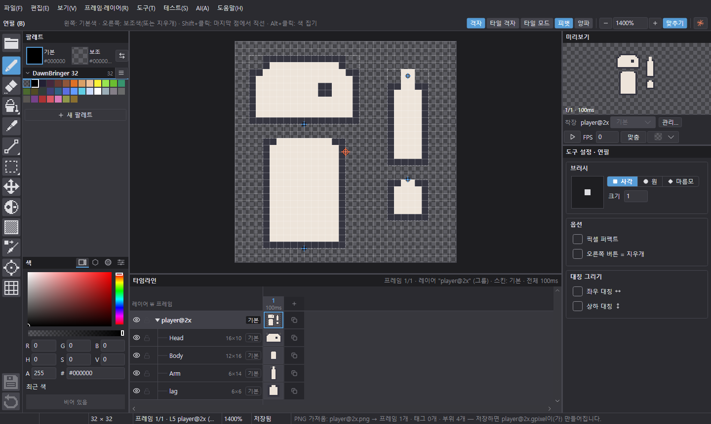

Pixel art editor for Unity 2D
Unity 2D 게임용
Unity 2D 게임용
픽셀 아트 편집기.
프레임·레이어·부위·스킨을 그리고, 저장하면 PNG 스프라이트 시트와 Unity .meta가 함께 만들어집니다.
바로 받기: Windows · macOS (Apple Silicon) · macOS (Intel)
무료오픈 소스 (MIT)Windows 10/11macOS 12+설치할 것 없음


Features
무엇을 할 수 있나요
게임에 바로 넣을 스프라이트를 그리는 데 필요한 것을 한 곳에.
01
저장하면 Unity로 바로
저장할 때 PNG 스프라이트 시트와 Unity .meta(칸 나누기·피벗 포함)를 함께 씁니다. Unity 프로젝트 폴더에서 바로 작업하세요.
02
프레임 · 레이어 · 태그
타임라인에서 프레임과 레이어를 다루고 태그로 애니메이션을 나눕니다. 양파 껍질과 미리보기로 움직임을 확인합니다.
03
부위와 스킨
머리·몸·팔처럼 부위로 나눠 그리고, 스킨으로 옷·장비를 바꿔 끼웁니다. Unity Sprite Library까지 내보냅니다.
04
레이어 효과
외곽선·그림자·광선부터 흔들림·폭발·페이드 같은 움직이는 효과까지, 원본을 건드리지 않고 덧입힙니다.
05
AI 채팅
내 컴퓨터의 Claude Code·Codex로 말로 그리고 고칩니다. API 키 없이 내 계정으로, 한 단계씩 되돌릴 수 있습니다.
06
팔레트와 언어
Lospec 팔레트를 바로 가져오고 팔레트 변환을 합니다. 한국어·영어를 지원하고 CSV로 다른 언어를 직접 만들 수 있습니다.
Download
내려받기
압축을 풀고 바로 실행합니다. 새 버전은 앱이 알려 주고 스스로 업데이트합니다.
WindowsWindows 10/11 · x64zip 내려받기
macOS · Apple SiliconM1 이후 Mac · macOS 12+zip 내려받기
macOS · IntelIntel Mac · macOS 12+zip 내려받기
처음 실행할 때 서명 경고가 뜨면 사용 가이드의 처음 실행할 때를 보세요. 지난 버전과 바뀐 점은 릴리스에 있습니다.